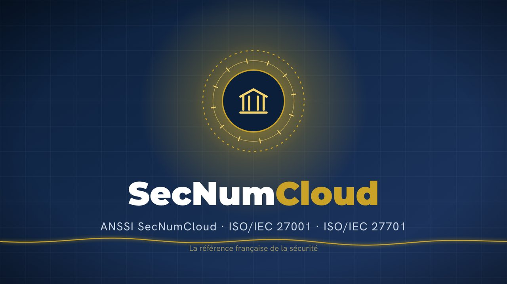

ARG
ARGARGOS › La réglementation en 4 minutes › SecNumCloud et ISO
SecNumCloud et ISO en 4 minutes: Une preuve n'est pas un formulaire
À côté de SecNumCloud, il y a la norme internationale ISO 27001, complétée par l'ISO 27701 pour la vie privée. C'est la référence, en attendant le schéma européen pour le cloud. Et une preuve n'est pas un formulaire.

- 0:00Le marché public
- 0:10SecNumCloud
- 0:25La preuve
- 0:40Le cadre
- 0:54Cycle SMSI
- 1:0893 mesures
- 1:19Les preuves
- 1:36Qui l'exige
- 1:50L'ANSSI
- 2:05Que faire
Points clés
- SecNumCloud La qualification de l'ANSSI
- ISO 27001 management de la sécurité
- ISO 27701 management de la vie privée
- SecNumCloud qualification de l'ANSSI
- EUCS schéma européen, en négociation
- Périmètre Systèmes et services
- Risques Analyse préalable
- Applicabilité Justifier chaque mesure
Transcription
Texte complet de la voix off
0:00 · Le marché public
Un marché public. Un service cloud. Une offre impeccable. Et une ligne dans le cahier des charges. Êtes-vous qualifié SecNumCloud ?
0:10 · SecNumCloud
En France, la référence pour le cloud de confiance s'appelle SecNumCloud, la qualification de l'ANSSI. Elle exige aussi une immunité face aux lois extraterritoriales. Sans elle, de nombreuses portes restent fermées.
0:25 · La preuve
Et une preuve n'est pas un formulaire. Définir le périmètre. Analyser les risques. Justifier chaque mesure dans la déclaration d'applicabilité. Réussir un audit indépendant. Et le renouveler régulièrement.
0:40 · Le cadre
À côté de SecNumCloud, il y a la norme internationale ISO 27001, complétée par l'ISO 27701 pour la vie privée. C'est la référence, en attendant le schéma européen pour le cloud.
0:54 · Cycle SMSI
Un système de management de la sécurité suit un cycle. Contexte et périmètre. Appréciation et traitement des risques. Mise en œuvre des mesures. Et audit et amélioration continue.
1:08 · 93 mesures
L'ISO 27001 contient 93 mesures en quatre thèmes. Organisationnelles. Liées aux personnes. Physiques. Et technologiques.
1:19 · Les preuves
Les preuves en un coup d'œil. ISO 27001 : le système de management de la sécurité. ISO 27701 : le management de la vie privée. SecNumCloud : la qualification de l'ANSSI. Et le schéma européen, toujours en négociation.
1:36 · Qui l'exige
Qui l'exige ? L'État et les collectivités. Les opérateurs d'importance vitale et les entités NIS2. La banque et l'assurance. Les établissements de santé. Et les entreprises qui achètent du cloud.
1:50 · L'ANSSI
Derrière, il y a l'ANSSI, autorité nationale de certification. Elle qualifie les offres cloud SecNumCloud. Des évaluateurs agréés réalisent les audits. Et l'Europe négocie un nouveau règlement sur la cybersécurité et son schéma cloud.
2:05 · Que faire
Que faire maintenant. Définir le périmètre, évaluer les risques, planifier la qualification et savoir où sont les données sensibles. ARGOS tient la déclaration d'applicabilité et les preuves à jour, et les relie à NIS2, au RGPD et au règlement sur l'IA, sans doublons. SecNumCloud et ISO : une confiance qui se prouve.
Questions fréquentes
Qu’est-ce que SecNumCloud et ISO ?
À côté de SecNumCloud, il y a la norme internationale ISO 27001, complétée par l'ISO 27701 pour la vie privée. C'est la référence, en attendant le schéma européen pour le cloud. En France, la référence pour le cloud de confiance s'appelle SecNumCloud, la qualification de l'ANSSI. Elle exige aussi une immunité face aux lois extraterritoriales. Sans elle, de nombreuses portes restent fermées.
Qu’exige SecNumCloud et ISO ?
Un système de management de la sécurité suit un cycle. Contexte et périmètre. Appréciation et traitement des risques. Mise en œuvre des mesures. Et audit et amélioration continue.
Quelles sont les dates clés ?
Les preuves en un coup d'œil. ISO 27001 : le système de management de la sécurité. ISO 27701 : le management de la vie privée. SecNumCloud : la qualification de l'ANSSI. Et le schéma européen, toujours en négociation.
Quelle est la situation en France ?
Et une preuve n'est pas un formulaire. Définir le périmètre. Analyser les risques. Justifier chaque mesure dans la déclaration d'applicabilité. Réussir un audit indépendant. Et le renouveler régulièrement. Derrière, il y a l'ANSSI, autorité nationale de certification. Elle qualifie les offres cloud SecNumCloud. Des évaluateurs agréés réalisent les audits. Et l'Europe négocie un nouveau règlement sur la cybersécurité et son schéma cloud.
Que doit faire une entreprise dès maintenant ?
Que faire maintenant. Définir le périmètre, évaluer les risques, planifier la qualification et savoir où sont les données sensibles. ARGOS tient la déclaration d'applicabilité et les preuves à jour, et les relie à NIS2, au RGPD et au règlement sur l'IA, sans doublons. SecNumCloud et ISO : une confiance qui se prouve.
Sources officielles
À voir aussi
 RGPD
RGPDRGPD en 4 minutes: Ce qui est le plus sanctionné, c'est l'essentiel
 EHDS
EHDSEHDS en 4 minutes: Pour les hôpitaux et les fabricants
 Règlement sur l'IA
Règlement sur l'IARèglement sur l'IA en 4 minutes: France : un cadre national en chantier
Voix et musique générées par intelligence artificielle (art. 50 du règlement sur l’IA). Information générale, pas un conseil juridique ; situation à novembre 2026, d’après les fiches réglementaires de Software in a Box. Clips vidéo sous licence Envato.
Pour intégrer cette présentation sur un autre site : <iframe src="https://argos.softwareinabox.eu/fr/reglementation/secnumcloud-iso-27001/presentacion/?embed=1" width="960" height="540" allow="autoplay; fullscreen" title="SecNumCloud et ISO en 4 minutes: Une preuve n'est pas un formulaire"></iframe> avec un lien vers cette page.
Aussi disponible en: EspañolDeutschFrançais (Belgique)ItalianoNederlandsNederlands (België)PortuguêsDansk